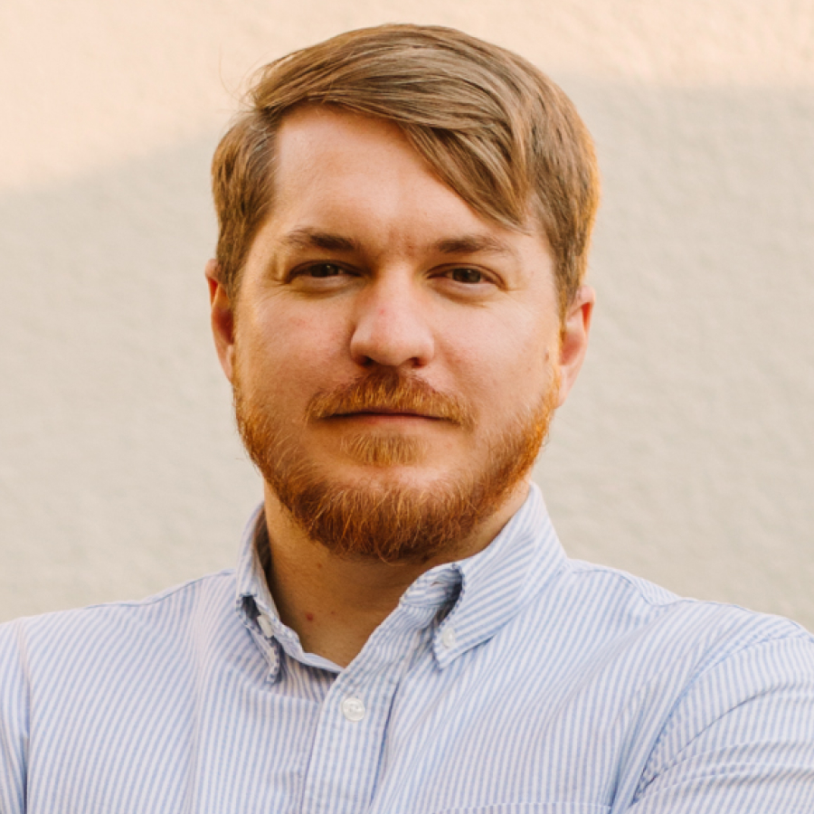

Hi, I'm Nathan.
I'm an entrepreneur living in LA with my wife, our two kids, and our dog, Porter.
Some career highlights: Back in 2013, I designed and built the first version of Product Hunt. Here's the backstory. Around that time I built Scratchpad.io (RIP), a coding tool that Hacker News was weirdly nice about, and then got acquired by General Assembly, where we turned it into Dash, and helped hundreds of thousands of people learn to code.
After GA, I co-founded Hardbound (RIP), a visual storytelling app that TechCrunch wrote a nice article about. We were in TechStars Boulder and raised a pre-seed round.
Then I joined Gimlet Media as Head of Product, helped build the product that won the first (and only?) Cannes Lion for an Alexa Skill. More importantly I was able to occasionally sit in the room next to genius editors, producers, and hosts as they created some of the best podcasts the world has ever heard.
After that, I joined Substack as first employee as they were finishing YC. There I built some of the core features you know and love, like the little screen that asks for your email before you read an article. (Happy to do my part helping writers get paid! 😅) I also built a fun system to identify promising writers on Twitter, known lovingly as the Baschez Score.
After that, I co-founded Every, and wrote a weekly column called Divinations focused on the intersection of technology and business strategy.
While at Every, I started working on a writing tool called Lex as a fun experiment on nights and weekends, and fell back in love with building software after a few years writing. We launched it and got 25k+ signups in the first day. It was unreal. After that, we spun it out into its own company that I have been leading since then. We raised a $2.8M seed round in Aug 2023 led by True Ventures.